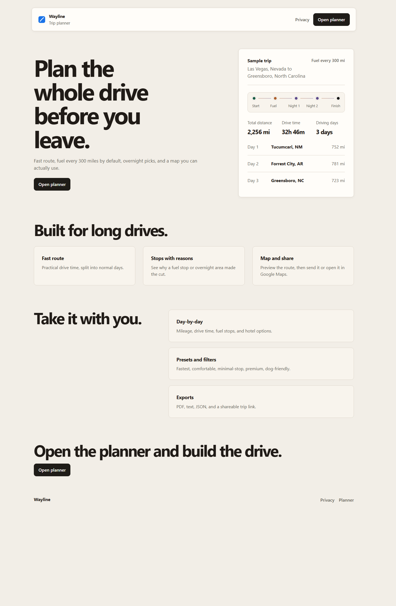
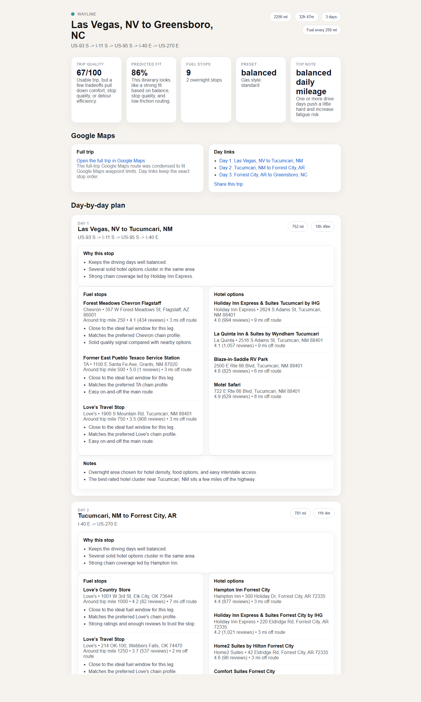
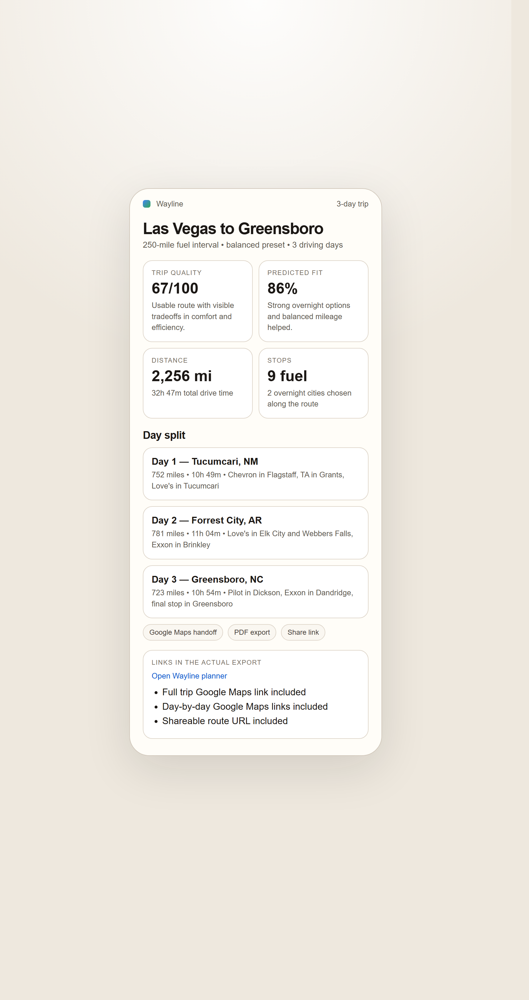
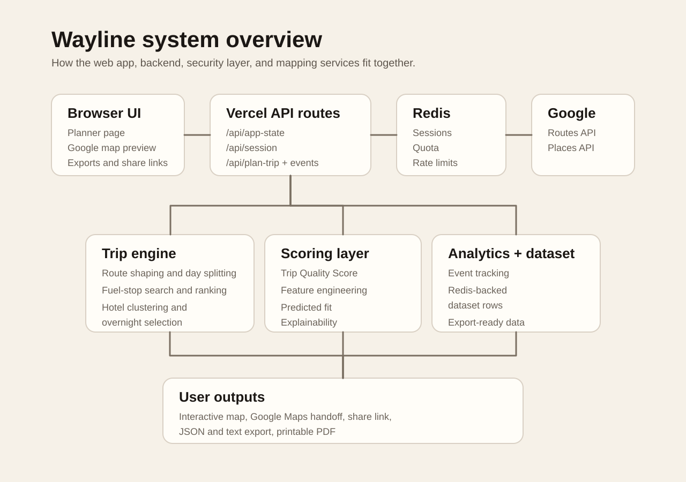
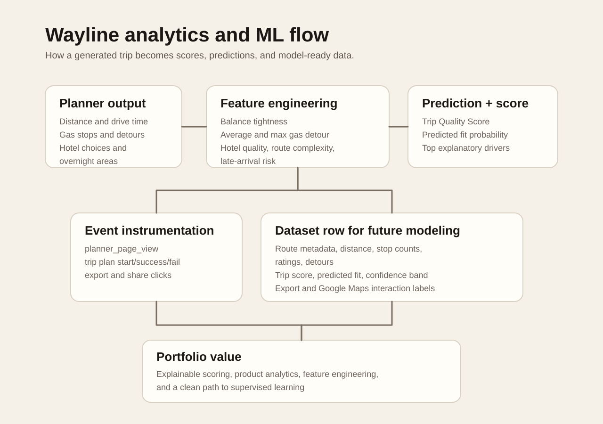

Wayline: Analytics-Driven Road Trip Planner

Overview
Wayline is a production-minded road trip planning system built around a simple question: what would make a long-distance drive actually usable, explainable, and worth trusting?
The project goes beyond plotting a route. It combines route orchestration, fuel-stop planning, overnight-city selection, hotel discovery, trip scoring, product analytics, protected API usage, and exportable planning outputs. I treated it like a product system rather than a static demo: every major user action can be measured, every trip can be exported, and every paid Google Maps request is protected behind session and quota controls.
What I Built
- Built a hosted trip-planning app with a public marketing surface and a protected planner workflow.
- Integrated Google Routes, Places, and Maps surfaces to generate realistic route, fuel, hotel, and map experiences.
- Designed a trip-quality scoring system that explains route efficiency, comfort balance, fuel-stop quality, overnight practicality, and preference fit.
- Added a lightweight predictive fit layer using engineered trip features and logistic-style scoring.
- Implemented email-gated access, signed sessions, CSRF protection, rate limits, Redis locks, and daily planning quotas to protect paid backend usage.
- Added export paths for PDF, text, JSON, share links, and Google Maps handoff.
- Instrumented the product with analytics events across planner views, email gate submissions, trip planning, quota blocks, exports, sharing, and result views.
Product Screenshots
 Planner intake. The trip form captures origin, destination, driving days, fuel interval, route preference, and trip assumptions before any paid route computation runs.
Planner intake. The trip form captures origin, destination, driving days, fuel interval, route preference, and trip assumptions before any paid route computation runs.

Desktop result. The output combines route summary, overnight cities, fuel stops, hotels, map handoff, exports, and explainable trip scoring.
Mobile result. The result page remains usable on a phone, which matters because road trip planning is often checked while traveling.Analytics and System Design

Architecture. The app separates the browser experience, server-side route orchestration, Google Maps services, Redis-backed sessions, quota controls, and export generation.
Analytics layer. Trip features, scoring outputs, and product events are structured so future model training and funnel analysis can build on clean data.The core design choice was to make the planner explainable. If Wayline says a trip is practical, the user can see why. If the fit score is lower, the system exposes the tradeoffs instead of hiding them behind a black-box recommendation.
Results/Impact
- Generated a complete Las Vegas, Nevada to Greensboro, North Carolina itinerary: 2,256 miles, 32 hours 47 minutes of drive time, 3 driving days, 9 fuel stops, and overnight stops in Tucumcari, New Mexico and Forrest City, Arkansas.
- Produced a trip quality score of 67/100 and a predicted trip fit of 86% for the sample route.
- Created multiple usable outputs from one planning run: interactive result page, Google Maps route handoff, PDF itinerary, text itinerary, JSON export, and shareable trip link.
- Built the project as a measurable product, not just a visual route demo, with event tracking and dataset-export scaffolding for future model evaluation.
Tech Stack
- Frontend: HTML, CSS, JavaScript, responsive product UI
- Backend: Node.js, Vercel serverless functions, route orchestration services
- APIs: Google Routes API, Google Places API, Google Maps handoff
- Data and infrastructure: Redis sessions, quotas, locks, rate limits, analytics events, structured JSON exports
- Modeling: engineered trip features, rule-based trip scoring, lightweight predictive fit layer